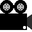

|
Ссылочки
 YouTube YouTube
 Мультики |
|
Информэйшн
Всем привет!Это просцецкий сайт 13 летнего школьника. Сверху находятся ссылки на мои контакты. Там же - кнопка на старую версию сайта (типо архив). Сижу за компом с 4 лет, вот и вырос такой умненький))) Новостейки
ОБ-НО-ВА!!!Пора уже чэнджлог делать! Ну так какая обнова? А такая! Ого-го какая!! Короче, страница стала меньше размером по вертикали, изменился цвет заголовков меню на зелёный, ссылки на всякое перенесены в меню, которое, кстати, расширилось. В-С-Ё!!!!!  08.04.2022 Как делается сайтВот и новость. Когда я делал последнее на данный момент обновление для сайта, я хотел сделать работу над ним удобнее. То есть сделать не 2 страницы index и mobila.html, а одну, но при этом, если сидишь с телефона, то ширина меняется на 480 пикселей. 20.03.2022 Обновуха под названием 1.1!!!Чёт в новостях только одни новости. Да и ладно! Короче, обновил я снова свой сайт. Добавил раздел с Мультиками собственного произодства, а также перенёс ссылку на старый сайт в меню слева и добавил разделение между новостями. Всё! 21.03.2022 Новое обновление!На основную страницу добавлен фон. Новости чутка переделались. А также самое главное! Добавлена автоматическая переадресация, если вы используете мобилку! 02.03.2022 Вышла мобильная версия!Официальный релиз состоялся сегодня утром! А сделал я эту мобильную версию всего за 30 минут. 26.02.2022 |